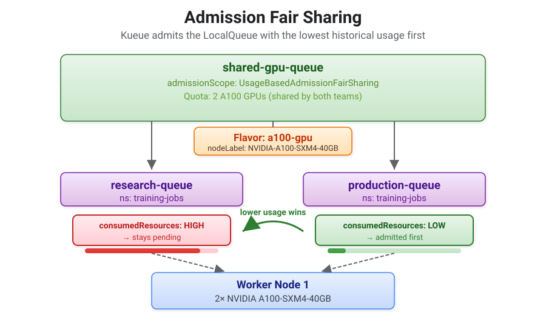

Admission Fair Sharing
The DRS fair sharing exercises demonstrated proportional preemption between ClusterQueues in a cohort. But what if both teams share the same ClusterQueue?
Admission Fair Sharing solves this. It tracks historical resource usage per LocalQueue and orders pending workloads so the team that consumed fewer resources gets admitted first. Unlike DRS fair sharing, there is no preemption — this is purely an admission ordering mechanism that decides who goes next when GPU slots free up.
Concepts

Key Differences from DRS Fair Sharing
| DRS Fair Sharing | Admission Fair Sharing | |
|---|---|---|
Scope |
Between ClusterQueues in a cohort |
Within a single ClusterQueue, across LocalQueues |
Mechanism |
Preempts running workloads |
Orders pending workloads at admission time |
Metric |
Current |
Historical |
Configuration |
|
|
Use case |
Separate teams with separate quotas that need proportional preemption |
Sub-teams sharing a single quota that need fair admission ordering |
How It Works
-
Kueue samples each LocalQueue’s resource consumption at a configurable interval (
usageSamplingInterval) -
Historical usage decays exponentially over time — the
usageHalfLifeTimecontrols how fast usage is "forgotten" (e.g., after 10 minutes at half-life, 50% of the usage record is gone) -
When GPU slots become available and multiple workloads are pending, Kueue admits workloads from the LocalQueue with the lowest accumulated usage first
-
An entry penalty is applied immediately on admission — this prevents a team from submitting a burst of 100 jobs simultaneously and having them all admitted before usage stats update
Lab: Configure and Demonstrate Admission Fair Sharing
1. Configure admission fair sharing
-
Scale down the Kueue operator to prevent it from overwriting the ConfigMap:
$ oc scale deployment openshift-kueue-operator -n openshift-kueue-operator --replicas=0 deployment.apps/openshift-kueue-operator scaled -
Verify the operator pods are gone:
$ oc get pods -n openshift-kueue-operator -l app.kubernetes.io/name=openshift-kueue-operator --no-headers No resources found in openshift-kueue-operator namespace.Expected output — no pods listed (or all
Terminating). If operator pods are stillRunning, wait a few seconds and re-check. -
Extract the current config and add the
admissionFairSharingblock:$ oc get configmap kueue-manager-config -n openshift-kueue-operator \ -o jsonpath='{.data.controller_manager_config\.yaml}' > /tmp/kueue-config-afs.yaml -
Add the
admissionFairSharingblock. Insert it before the existingfairSharing:line in/tmp/kueue-config-afs.yaml:$ sed -i.bak '/^fairSharing:/i \ admissionFairSharing: \ usageHalfLifeTime: 10m \ usageSamplingInterval: 5s' /tmp/kueue-config-afs.yaml -
Verify the edit:
$ grep -A2 admissionFairSharing /tmp/kueue-config-afs.yaml admissionFairSharing: usageHalfLifeTime: 10m usageSamplingInterval: 5sWe use a short usageHalfLifeTime(10 minutes) and fastusageSamplingInterval(5 seconds) so results are visible within the lab timeframe. In production, use168h(1 week) and5mrespectively — this matches the upstream defaults and avoids overloading the controller with frequent sampling. -
Apply the updated ConfigMap and restart the controller:
$ oc create configmap kueue-manager-config -n openshift-kueue-operator \ --from-file=controller_manager_config.yaml=/tmp/kueue-config-afs.yaml \ --dry-run=client -o yaml | oc replace -f - configmap/kueue-manager-config replaced $ oc rollout restart deployment/kueue-controller-manager -n openshift-kueue-operator deployment.apps/kueue-controller-manager restarted $ oc rollout status deployment/kueue-controller-manager -n openshift-kueue-operator --timeout=60s deployment "kueue-controller-manager" successfully rolled out -
Verify the controller pod is running (not in
CrashLoopBackOff):$ oc get pods -n openshift-kueue-operator -l control-plane=controller-manager NAME READY STATUS RESTARTS AGE kueue-controller-manager-985456b49-69mdr 1/1 Running 0 18s kueue-controller-manager-985456b49-lgw7w 1/1 Running 0 18sIf you see
CrashLoopBackOffinstead ofRunning, check the logs:$ oc logs -n openshift-kueue-operator deploy/kueue-controller-manager --tail=5A
strict decoding errormeans a field name was misspelled. The field must be exactlyadmissionFairSharing(notadmissionFairsharingoradmission_fair_sharing). Fix the YAML in/tmp/kueue-config-afs.yamland re-apply. -
Review
kueue-config/10a-admission-fair-sharing.yamlbefore applying. Unlike DRS fair sharing (which uses two ClusterQueues in a cohort), admission fair sharing uses a single ClusterQueue with two LocalQueues:apiVersion: kueue.x-k8s.io/v1beta2 kind: ClusterQueue metadata: name: shared-gpu-queue spec: admissionScope: admissionMode: UsageBasedAdmissionFairSharing (1) resourceGroups: - coveredResources: ["cpu", "memory", "nvidia.com/gpu"] flavors: - name: a100-gpu resources: - name: nvidia.com/gpu nominalQuota: 2 (2) --- apiVersion: kueue.x-k8s.io/v1beta2 kind: LocalQueue metadata: name: research-queue namespace: training-jobs (3) spec: clusterQueue: shared-gpu-queue --- apiVersion: kueue.x-k8s.io/v1beta2 kind: LocalQueue metadata: name: production-queue namespace: training-jobs (3) spec: clusterQueue: shared-gpu-queue1 UsageBasedAdmissionFairSharingenables usage-based admission ordering. Kueue tracks historicalconsumedResourcesper LocalQueue and admits the queue with the lowest accumulated usage first. No preemption — this only affects admission ordering.2 Both teams share the same 2-GPU quota. Unlike DRS fair sharing, there is no per-team quota split. 3 Both LocalQueues are in the same namespace ( training-jobs) and point to the same ClusterQueue. The queue name in the Job’s label determines which LocalQueue’s usage counter is charged. -
Apply the configuration:
$ oc apply -f kueue-config/10a-admission-fair-sharing.yaml clusterqueue.kueue.x-k8s.io/shared-gpu-queue created localqueue.kueue.x-k8s.io/research-queue created localqueue.kueue.x-k8s.io/production-queue created -
Verify the ClusterQueue is active with admission fair sharing enabled:
$ oc get clusterqueue shared-gpu-queue \ -o custom-columns='NAME:.metadata.name,STATUS:.status.conditions[?(@.type=="Active")].status,SCOPE:.spec.admissionScope.admissionMode' NAME STATUS SCOPE shared-gpu-queue True UsageBasedAdmissionFairSharingThe openshift-kueue-operatoractively reconciles thekueue-manager-configConfigMap. If the operator is running, it will strip theadmissionFairSharingblock within seconds. Keep it scaled down for the duration of this exercise. It will be scaled back up during the cleanup step at the end of this page.
2. Submit round 1 and round 2
-
Review
workloads/job-admission-fs-round1.yamlbefore applying. Both jobs follow the same pattern — here is one representative Job:apiVersion: batch/v1 kind: Job metadata: name: research-round1-job-1 namespace: training-jobs labels: kueue.x-k8s.io/queue-name: research-queue (1) spec: suspend: true template: spec: containers: - name: training-workload image: registry.access.redhat.com/ubi9/ubi args: - | END=$((SECONDS+300)) (2) while [ $SECONDS -lt $END ]; do nvidia-smi; sleep 5 done resources: requests: nvidia.com/gpu: "1" (3) limits: nvidia.com/gpu: "1"1 The queue-namelabel routes this job toresearch-queue. Kueue charges this LocalQueue’sconsumedResourcescounter while the job runs. This is the usage history that drives admission ordering.2 5-minute duration — this gives you enough time to submit round 2, check usage statistics, and observe the admission ordering when round 1 completes. 3 Each job requests 1 GPU. Two jobs fill the entire 2-GPU quota of shared-gpu-queue.The round 2 file (
job-admission-fs-round2.yaml) contains 4 jobs: 2 Research + 2 Production. They are identical to round 1 except for thequeue-namelabel — production jobs useproduction-queueinstead ofresearch-queue. -
Submit round 1 (2 research jobs that fill both GPU slots):
$ oc apply -f workloads/job-admission-fs-round1.yaml job.batch/research-round1-job-1 created job.batch/research-round1-job-2 created -
Verify both jobs are admitted and running:
$ oc get pods -n training-jobs -o wide NAME READY STATUS RESTARTS AGE IP NODE NOMINATED NODE READINESS GATES research-round1-job-1-zmd7r 1/1 Running 0 9s 10.235.0.62 worker-cluster-vnnbf-1 <none> <none> research-round1-job-2-tjdqh 1/1 Running 0 9s 10.235.0.63 worker-cluster-vnnbf-1 <none> <none> -
Submit round 2 immediately while round 1 is still running. Both GPU slots are occupied, so all 4 round-2 jobs will land in the pending queue:
$ oc apply -f workloads/job-admission-fs-round2.yaml job.batch/research-round2-job-1 created job.batch/research-round2-job-2 created job.batch/production-round2-job-1 created job.batch/production-round2-job-2 created -
Verify the ClusterQueue shows 2 admitted (round 1) and 4 pending (round 2):
$ oc get clusterqueue shared-gpu-queue \ -o custom-columns='NAME:.metadata.name,ADMITTED:.status.admittedWorkloads,PENDING:.status.pendingWorkloads' NAME ADMITTED PENDING shared-gpu-queue 2 4
3. Observe admission ordering
-
While round 1 is running, check the accumulated usage for each LocalQueue:
$ oc get localqueue research-queue -n training-jobs \ -o jsonpath='{.metadata.name}{": "}{.status.fairSharing.admissionFairSharingStatus.consumedResources}{"\n"}' research-queue: {"cpu":"0","memory":"280792871461m","nvidia.com/gpu":"0"} $ oc get localqueue production-queue -n training-jobs \ -o jsonpath='{.metadata.name}{": "}{.status.fairSharing.admissionFairSharingStatus.consumedResources}{"\n"}' production-queue: {"cpu":"0","memory":"0","nvidia.com/gpu":"0"}research-queuehas non-zero usage (from running round 1).production-queuehas all zeros (it has never run any jobs). This difference is what Kueue uses to decide admission ordering when round 1 completes.The consumedResourcesvalues are accumulated resource-time integrals (resource x time x samples), not instantaneous usage — that is why the memory number looks large. These values decay exponentially based onusageHalfLifeTime(10 minutes in this lab). -
Wait for round 1 to complete (~5 minutes) — this frees both GPU slots:
$ oc wait --for=condition=complete job/research-round1-job-1 job/research-round1-job-2 \ -n training-jobs --timeout=360s job.batch/research-round1-job-1 condition met job.batch/research-round1-job-2 condition met -
As soon as round 1 finishes, Kueue admits workloads from the pending queue. Wait a few seconds for the controller to process, then check which team got admitted first:
$ sleep 3 $ oc get workloads -n training-jobs \ -o custom-columns='NAME:.metadata.name,QUEUE:.spec.queueName,ADMITTED:.status.conditions[?(@.type=="Admitted")].status' \ | grep round2 job-production-round2-job-1-fbcf1 production-queue True job-production-round2-job-2-67333 production-queue True job-research-round2-job-1-7be29 research-queue <none> job-research-round2-job-2-6e435 research-queue <none>Production admitted, Research still pending — exactly what admission fair sharing predicts.
-
Verify the pods confirm this:
$ oc get pods -n training-jobs --no-headers | grep round2 production-round2-job-1-q2l5q 1/1 Running 0 15s production-round2-job-2-tms2k 1/1 Running 0 15sOnly production pods are running. The research round-2 jobs are not even listed because Kueue is holding them in a scheduling gate until GPU slots free up.
This is Admission Fair Sharing in action. Even though the research jobs were created first in the YAML file, Kueue checked the historical
consumedResourcesfor each LocalQueue and admitted `production-queue’s workloads first because it had lower accumulated usage.What happened:
-
Round 1 built usage history for
research-queue(5 minutes x 2 GPUs worth of resource-time) -
Round 2 submitted all 4 jobs while the queue was full — all 4 were pending
-
When round 1 completed and GPU slots freed up, Kueue checked
consumedResourcesfor each LocalQueue -
production-queuehad no historical usage — its 2 workloads were admitted first -
research-queuehad higher accumulated usage — its 2 workloads stay pending until production finishes
-
-
Wait for production to complete, then verify research gets admitted:
$ oc wait --for=condition=complete job/production-round2-job-1 job/production-round2-job-2 \ -n training-jobs --timeout=120s job.batch/production-round2-job-1 condition met job.batch/production-round2-job-2 condition met $ sleep 3 $ oc get pods -n training-jobs --no-headers | grep round2 production-round2-job-1-q2l5q 0/1 Completed 0 74s production-round2-job-2-tms2k 0/1 Completed 0 74s research-round2-job-1-t5r7v 1/1 Running 0 8s research-round2-job-2-hq8k4 1/1 Running 0 8sProduction pods are
Completed, and research pods are nowRunning— Kueue admitted them as soon as GPU slots freed up.
4. Clean up admission fair sharing
-
Wait for all jobs to complete, then clean up:
$ oc wait --for=condition=complete job/research-round2-job-1 job/research-round2-job-2 \ -n training-jobs --timeout=120s job.batch/research-round2-job-1 condition met job.batch/research-round2-job-2 condition met $ oc delete jobs --all -n training-jobs job.batch "production-round2-job-1" deleted job.batch "production-round2-job-2" deleted job.batch "research-round1-job-1" deleted job.batch "research-round1-job-2" deleted job.batch "research-round2-job-1" deleted job.batch "research-round2-job-2" deleted $ oc delete localqueue research-queue production-queue -n training-jobs localqueue.kueue.x-k8s.io "research-queue" deleted localqueue.kueue.x-k8s.io "production-queue" deleted $ oc delete clusterqueue shared-gpu-queue clusterqueue.kueue.x-k8s.io "shared-gpu-queue" deleted -
Scale the operator back up — it will revert the ConfigMap (removing
admissionFairSharing) and restart the controller automatically:$ oc scale deployment openshift-kueue-operator -n openshift-kueue-operator --replicas=2 deployment.apps/openshift-kueue-operator scaled -
Wait about 30 seconds for the operator to reconcile, then verify all pods are healthy:
$ oc get pods -n openshift-kueue-operator --no-headers kueue-controller-manager-6d948c474c-mnflm 1/1 Running 0 22s kueue-controller-manager-6d948c474c-xgww5 1/1 Running 0 22s openshift-kueue-operator-5b4c49c95c-9mql2 1/1 Running 0 36s openshift-kueue-operator-5b4c49c95c-m469q 1/1 Running 0 36s -
Verify the controller is healthy and existing ClusterQueues are unaffected:
$ oc get clusterqueues NAME COHORT PENDING WORKLOADS a100-cluster-queue 0 default 0 t4-cluster-queue 0